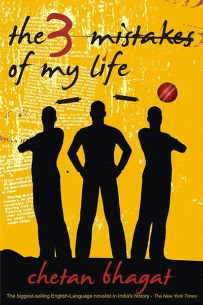

Library › Self-Improvement
The 3 Mistakes of My Life — Summary & Key Lessons

Three friends, three mistakes, one second innings.
📖 OPEN THE FULL INTERACTIVE BREAKDOWN →🌐 Read it in Hindi, Hinglish, Gujarati, Tamil & 22 more languages — free, with audio.
💡 The Big Idea
Bhagat's third novel follows three Ahmedabad friends — Govind, Ishaan and Omi — through cricket coaching, a small business, and the turbulence of early-2000s Gujarat. The 'three mistakes' are the book's structure: choosing the wrong partner, putting ambition before people, and letting circumstances define identity. Beneath the fiction is a practical manual on youth, friendship, business and recovery: how dreams get built in small towns, how they break, and how the broken pieces still make a life. The lesson: your mistakes don't define you — your response to them does.
🧠 The 6 Key Lessons
Lesson 1: Mistake One: Choosing the Wrong Partner (Business and Life)
Part 1: The Partners
Govind's first mistake is his business partnership with Omi — a friend who brings enthusiasm but not alignment, and whose family's baggage eventually drags the venture down. Bhagat's lesson: compatibility of values matters more than warmth of friendship when building together. The partner who is a great friend can be a disastrous co-founder if goals, risk appetite and ethics diverge. The rule: before partnering, test alignment on money, risk and conflict — the conversation that feels awkward early saves a catastrophe later. Warmth is not alignment.
📖 Example: The trio's cricket-coaching business thrives until Omi's family and Ishaan's priorities pull in opposite directions — the friendship survives, the partnership doesn't. The emotional glue was mistaken for structural glue. Read the full example →
⚡ Do this: Before your next partnership (business or life), write down each party's goals, risk appetite and conflict style. If they diverge, name it now — alignment is cheaper than rescue.
Lesson 2: Mistake Two: Ambition Before People
Part 2: The Priorities
Govind's second mistake: he keeps choosing the business over his best friend's emotional needs — and the neglected friendship quietly becomes the venture's undoing. Bhagat's lesson: the relationships you deprioritize today are the ones you'll need tomorrow. The founder who treats people as resources discovers the resources walk — or, worse, stay and sabotage. The lesson isn't 'choose people over work' but 'don't let work consume the people who make it possible'. The relationship audit belongs on the same calendar as the business review: both need weekly deposits.
📖 Example: Every time Ishaan needed his friend, Govind was 'busy with the business' — and the accumulated withdrawals eventually emptied the account at exactly the moment the business needed the friendship. Read the full example →
⚡ Do this: Run a relationship audit: who has deposits due this week? Schedule one genuine, non-transactional conversation before the account hits zero.
Lesson 3: Mistake Three: Letting Circumstances Define You
Part 3: The Identity
The third mistake is collective: the friends let the chaos around them — communal riots, earthquakes, fear — define who they are and what they believe. Bhagat's lesson: circumstances are real, but they are not identity. The person who says 'my situation made me this' has surrendered authorship; the person who says 'my situation is real and here is my response' keeps the pen. Crises reveal character only to the extent that they don't create it. The response-able person — able to respond — remains the author of their story even in the worst chapters.
📖 Example: The novel's darkest scenes show the friends choosing sides and beliefs under pressure — and the choices made in fear cost them more than the circumstances themselves ever did. Read the full example →
⚡ Do this: Identify one way your current circumstances have 'become' your identity. Write your response as a choice, not a consequence — and act on it.
Lesson 4: The Small-Town Entrepreneur: Building Without Privilege
Part 4: The Business
The trio's cricket-coaching business is small-town entrepreneurship at its purest: no funding, no network, just a skill, a space and relentless hustle. Bhagat's lesson: you don't need a big city or big capital to start — you need a real local need and the willingness to serve it excellently. The coaching class that wins on quality creates its own referrals; the small business that treats every customer like the only customer builds a moat. Start where you are, with what you have, serving who's near. The local excellence is the global launchpad.
📖 Example: Govind's coaching classes grow purely on word-of-mouth because the kids actually improve — the small-town reputation becomes a brand no advertising could have bought. In practice, 'small' shows up in tiny daily choices long before it shows up in outcomes —… Read the full example →
⚡ Do this: Identify one local need you can serve excellently with current resources. Serve ten customers so well they become your marketing.
Lesson 5: Cricket and Business: The Game Teaches the Game
Part 5: The Metaphor
Bhagat weaves cricket coaching through the book because the game is the business: read the pitch, play the ball, don't chase the bad delivery, and the partnership wins more than the individual heroics. His lesson: the disciplines of sport — practice, reading conditions, playing the long innings, respecting the opposition — transfer directly to work and life. The person who treats their career like a long innings (build steadily, protect the wicket, accelerate late) outperforms the one who swings for the boundary every ball. The game teaches patience and placement.
📖 Example: Govind's best coaching insight — play each ball on its merit, don't pre-decide the shot — applies directly to his business decisions, where reacting to actual situations beats executing pre-decided plans. Read the full example →
⚡ Do this: Pick one 'sport discipline' and apply it to work this week: play the ball on merit, protect your wicket, or build the partnership. Log the difference.
Lesson 6: Recovery: The Broken Dream Can Still Score
Part 6: The Comeback
The novel's end is not a victory lap but a beginning: after the mistakes and the loss, the characters rebuild — smaller, wiser, and still playing. Bhagat's lesson: the dream that breaks is not the end of the innings; it's the interval. Recovery is not returning to where you were but continuing from where you are, with the lessons as equipment. The person who can grieve the broken dream and still show up for the next over has the only skill that guarantees a second innings: resilience. The scoreboard resets; the player remains.
📖 Example: After the partnership collapses, Govind doesn't abandon coaching — he rebuilds it alone, smaller and better, carrying the lessons instead of the bitterness. The dream survived its own failure. Read the full example →
⚡ Do this: Identify one 'broken dream' you're still grieving. Write the lesson it taught you, then take one action today that rebuilds the dream in its new, wiser form.
✅ 5-Step Action Plan
- Test alignment with partners on goals, risk and conflict — in writing.
- Make one relationship deposit this week before it hits zero.
- Write your response to circumstances as a choice, not a consequence.
- Serve ten local customers so well they become your marketing.
- Take one action to rebuild a broken dream in wiser form.
⚠️ When This Doesn't Work
Bhagat's 'passion, friendship and business can coexist if you choose carefully' is the most readable Indian business-fable ever — and Pepperfry is the warning about the third mistake: the furniture e-commerce pioneer had the passion, the team and the decade of dedication Bhagat's heroes embody — and still lost to the category's brutal economics, selling at a fraction of its story. The book's heroes survive because it's fiction; the graveyard is full of real founders whose only mistake was a category that couldn't pay. The caveat: passion is necessary, never sufficient — check the category math before you commit the decade.
💀 The Graveyard Proves It
🛋️ Pepperfry — 10 Years of Furniture E-Commerce, Ended by a Fire Sale. Burn: ₹400+ Cr accumulated losses → acquired at a fraction of its peak $2B claim. Read the full case study →
💬 Best Quotes from The 3 Mistakes of My Life
- “Your mistakes don't define you — your response to them does.”
- “Warmth is not alignment — test partners on values before trust.”
- “The scoreboard resets; the player remains.”
Interactive version: mark lessons as read, listen in your language, share quote cards.